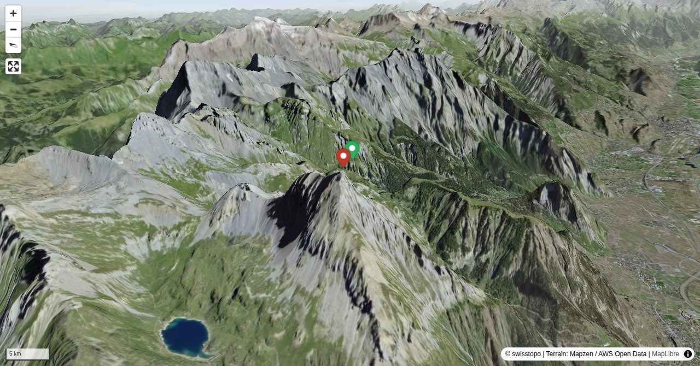

Imposant ragt der Grand Chavalard über dem Rhôneknie in den Höhe und eröffnet bei klarer Sicht wunderbare Blicke zum Mont-Blanc-Massiv und Grand Combin. Obwohl gerade mal 2901 m hoch, sind es vom Rhônetal 2440 m Höhendifferenz zum Gipfel - eine Besteigung vom Tal aus wäre ein strammes Konditionstraining. Zwar kann der Grand Chavalard als Tagestour bewältigt werden, eine Übernachtung z.B. der Cabane de Fenestral ist dennoch eine lohnende Sache – schliesslich ist das morgendliche Licht für die Gipfelschau am schönsten.
Man sollte vermeiden, von Le Basse direkt auf den Grat zu gelangen (blaue Punkte). Der Fels ist hier sehr instabil!
Quick Facts
| Summit elevation | 2872 m |
|---|---|
| Difficulty | SAC T5- Check the route notes below for terrain and commitment level. Guide |
| Trailhead | Jorasse, Bergstation |
| Distance | 14.3 km (out-and-back) |
| Total ascent | ~1343 m |
| Elevation range | 1662-2871 m |
| Route sources | SAC Route Portal |
Photos


All photos: SAC Route Portal
Interactive Route Map
Map tiles: © swisstopo (CC BY 3.0) | © OpenStreetMap contributors | Map library: Leaflet. Route line is approximate — verify against the SAC Route Portal before going.
3D Terrain View

Tiles: © swisstopo (SWISSIMAGE) + AWS Terrain Tiles. Powered by MapLibre GL JS. Open fullscreen ↗
Route Details
Überschreitung Nordgrat - Südgrat
- TODO: Step 1 description.
- TODO: Step 2 description.
Terrain & safety
Trittsicherheit und Schwindelfreiheit auf dem weglosen Nordgrat erforderlich. Markierter, aber sehr steiler Abstieg über den Südgrat (T3+/T4-). Knieschonender wäre die Tour eigentlich in umgekehrter Richtung. Man sollte vermeiden, von Le Basse direkt auf den Grat zu gelangen (blaue Punkte). Der Fels ist hier sehr instabil!
Source: SAC Route Portal
Getting There & Back
Start: Jorasse, Bergstation (1946 m)
Directions from to Jorasse, Bergstation
Route returns to Jorasse, Bergstation.
Weather Planning
7-day summit forecast (live)
Loading forecast…
Elevation Profile
Computed from the inlined GPX track (elevations from SwissTopo height API).